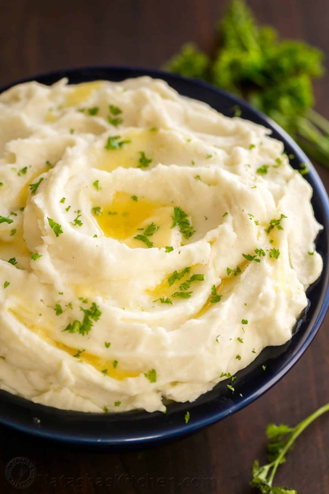

Creamy mashed potatoes

This creamy mashed potatoes recipe is shockingly good
This mashed potatoes recipe has just 4 simple ingredients (one of which is salt), but there are several secrets that make this recipe work so well.
Ingredients
- 4 lbs (12 medium) russet potatoes, peeled
- 1 1/4 cups hot milk (we used whole milk)
- 2 sticks (1 cup) unsalted butter at room temperature (not melted)
- 1 1/2 tsp sea salt, or to taste
- 1 Tbsp fresh parsley or chives, finely chopped for garnish
Steps
- Peel potatoes
- Drain well and transfer to the bowl of your stand mixer
- Grab the whisk attachment and mash potatoes lightly by hand to break them up
- start mixer on low speed 30 seconds then increase to medium and slowly drizzle in 1 to 1 1/4 cups HOT milk.
- With mixer on, add softened butter 1 Tbsp at a time, waiting a few seconds between each
- To keep mashed potatoes warm until serving: cover potatoes
home